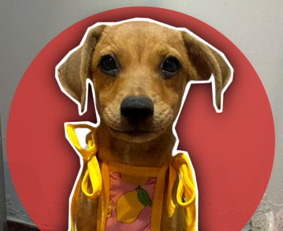

Wellcome
Bienvenidos a la "Segunda Oportunidad", un sitio web donde podrás adoptar, dar en Adopción Agendar una Consulta entre otras cosas.
Todo esto con el fin de ayudar a reducir el abandono de mascotas, ayudando a personas que no pueden cuidar de estás y encontrándoles un hogar donde estas puedan ser bien tratadas.


Brinda hogar a una mascota
Encuentra a tu nuevo mejor amigo y brindarle un hogar.
En nuestro apartado de Adopcion podrás adoptar a alguna de nuestas mascotas solo nesecitarías llenar un par de formularios para valorar de que seas apto para una Adopción y listo podras tenera a tu nuevo mejro amigo A.K.A tu nuevo mejor amigo.

¡Todos nos meresemos un hogar!
Da en Adopcion
Se sabe que muchas de las mascotas abandonadas son por que los dueños no pueden cuidarlos o por que no son deseadas, y estas son desperdigadas, lo cual es algo muy malo para la salud social.
Por lo que es mejor evitar camadas innesesarias o la adopción inconsciente, si embargo si esto es inevitable, puedes obtar por dar en adopción a tu mascota, solo tienes que rellenar un formulario con datos de la mascota y listo evitas un problema de salud al igual que evitas que esta sufra.

Debes cuidar bien a tu mascota

Dale un buen Tratao a tu Mascota
Muchas veces no se le da un buen cuidado a nuestas mascotas, ya sea por falta de dinero o timepo y esto es malo ya que sin un buen cuidado estas podiran llegar a oler mal o presentar problemas de salud.
Nosotros queremos eradicar este problema brindando consultas veterinarias acceseibles y rápidas, es decir que la sita la puedes Agendar para que no tengas que estar esperando en nuestra veterinaria y solo tengas que ir a nuestra veterinaria en la fecha y hora agendada.
Oh NO... parece que algo no anda bien!!!

Si tienes alguna queja
con nuestro sitio web.
Preciona la imagen
con nuestro sitio web.
Preciona la imagen